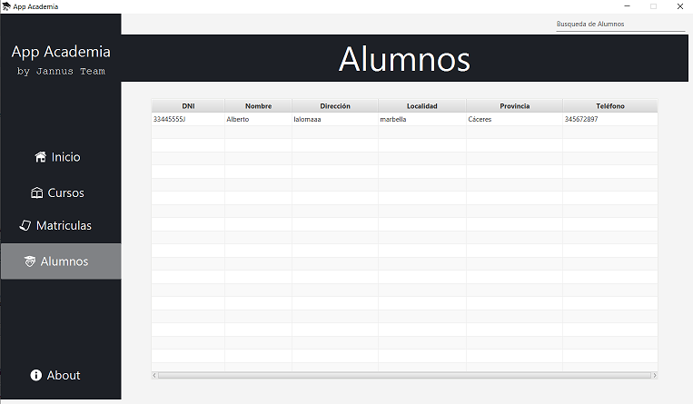
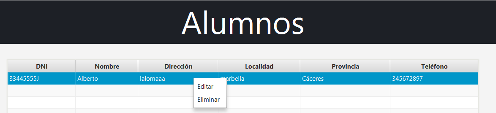
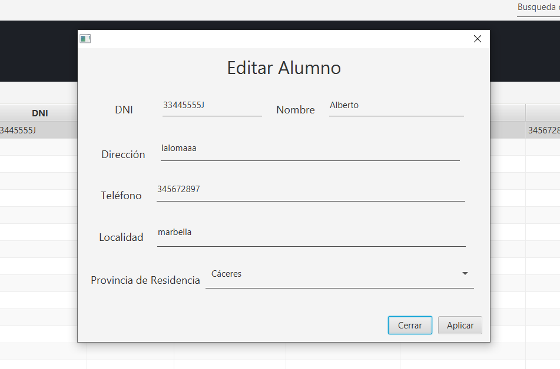

APP ACADEMIA: BÚSQUEDA DE ALUMNOS
Para realizar una búsqueda de un alumno previamente insertado en la aplicación, seleccionar del menú situado a la izquierda de la aplicación la opción denominada “Alumnos”.
1. Componentes

Una vez situados en la pestaña de alumnos, encontramos los siguientes elementos:
1. Barra de búsqueda: este componente permite la búsqueda del alumno deseado, permitiendo el filtrado y la búsqueda por todos y cada uno de los campos especificados en el titulo de la tabla, es decir, se podrá buscar un alumno por su DNI, Nombre, Dirección, localidad, provincia y teléfono.
2. Tabla de información: en este componente se mostrarán todos los datos de todos los alumnos insertados previamente en la aplicación. Al realizar cualquier búsqueda, la información mostrada en la tabla será la relacionada con los datos que coincidan con el campo por el cual se realice la misma.
2. Edición y Eliminación de un Alumno
Para acceder a las opciones de edición y eliminación de un alumno, se hará clic derecho del ratón sobre el registro del alumno. A continuación, se mostrará un submenú con ambas opciones a elegir.

2.1 Edición de un alumno
Una vez se acceda al submenú, para la edición de un alumno se elegirá la opción “Editar”. Al pulsar sobre esta opción aparecerá una nueva ventana, la cual contendrá un formulario con los datos que se podrán editar del alumno seleccionado:

Los campos editables sobre el alumno será los siguientes, vistos de arriba hacia abajo:
Campo |
Restricción |
DNI |
se deberá introducir 8 números para completar este campo. La letra de este campo se auto completará al rellenar tales dígitos. |
Nombre |
Se introducirá el nombre del alumno. Puede contener un máximo de 30 caracteres. |
Dirección |
Introducir el nombre de la dirección del alumno. |
Teléfono |
Introducir el número de teléfono del alumno, solo podrá contener 9 dígitos. |
Localidad |
Introducir el nombre de la localidad del alumno. |
Provincia |
elegir el nombre de la provincia de residencia del alumno. |
2.2 Eliminación de un alumno
Una vez se acceda al submenú, para la eliminación de un alumno se elegirá la opción “Eliminar”. Al pulsar sobre esta opción se eliminará de forma inmediata y permanente el alumno seleccionado.